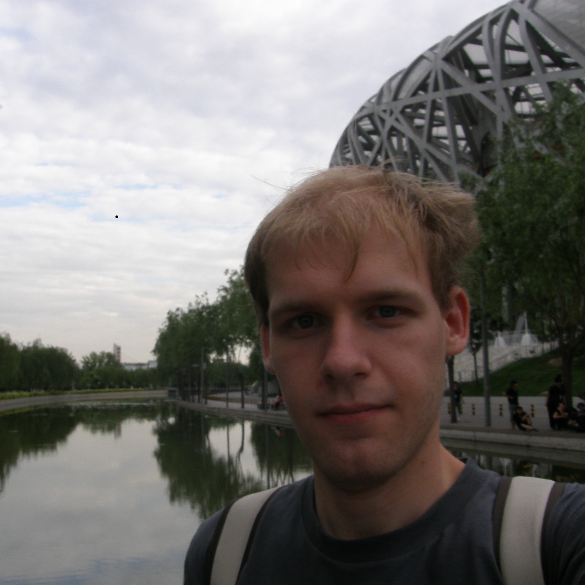

I'm a computer scientist and practitioner interested in programming languages and algorithms, with a diverse software engineering experience.
I enjoy developing practical yet minimalistic tools and libraries, as well as developing theoretical frameworks to elegantly solve problems with less-than-ideal solutions.
Optimization is what I am constantly striving for; it ranges from reducing running time of an algorithm, compile time of a build system, via finding cost-optimal solution to an optimization problem or generating the fastest code, to developing specialized tools to optimize workflows and to make daily tasks more automated and less error-prone.
Only those who have the patience to do simple things perfectly will acquire the skill to do difficult things easily. ~ Johann Friedrich von Schiller
I tend to prefer completeness and versatility, sometimes at
the cost of simplicity. To that end, I admire carefully
developed software such as Git and Emacs.
Similarly, I believe that thoroughness and persistence
eventually pays off, and I dare to continuously
learn new things despite of their learning curve.
I am a PhD candidate at Purdue University, interested in programming languages and algorithms. My research focuses on improving high-level languages, in particular object-oriented and functional ones. I have worked on extending their type systems as well as optimizing and understanding their run-time performance, often by exploiting advanced type system features and customized data structures.
I have a strong algorithmic and software engineering background, and am an advocate of reproducible research via open-source tools. Among my earliest accomplishments are awards at national and international competitions in computer programming such as TopCoder and American Computer Science League, during which algorithmic problems are solved in limited time and memory. More recently, I had the honor to receive the Distinguished Artifact Award for the paper "Gentrification Gone too Far? Affordable 2nd-Class Values for Fun and (Co-)Effect", published by the ACM in the OOPSLA'16 proceedings.
Outside academia, I have enhanced infrastructure and tools as an intern at Facebook and Yelp, and developed a scalable and robust algorithm for enhancing aerial images at Google. In addition to computer vision, distributed systems and networking, I have also worked on constrained optimization problems.
My passion is applying novel (meta)programming techniques and ideas to develop elegant yet practical tools and libraries, which I release as open-source on GitHub when they become mature.